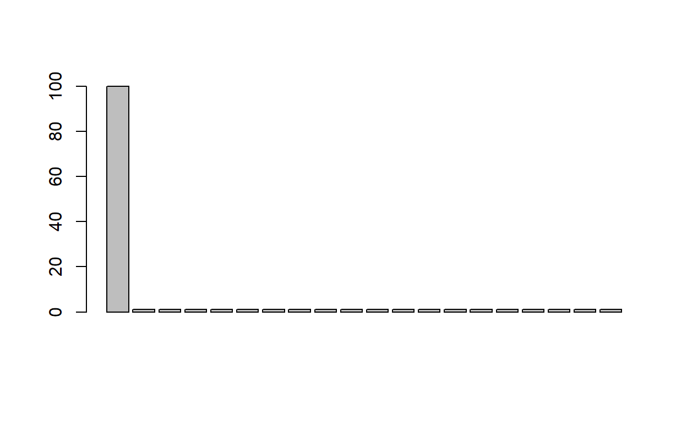
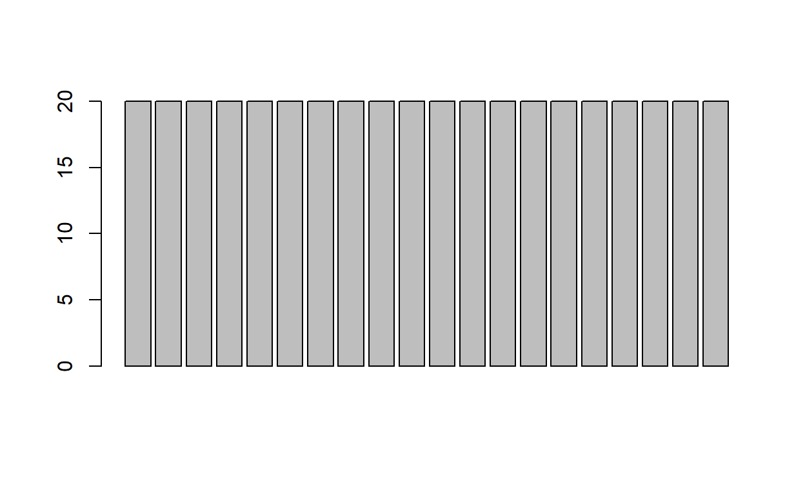

Week 3: Plots, summary statistics, & data transformations
ANTH 674: Research Design and Analysis in Anthropology
Professor Andrew Du
Introduction
This week’s tutorial covers how to create plots, calculate summary statistics, and transform data in R. There is a lot in this week’s tutorial, so don’t do it all in one sitting if it’s too much!
Plots are visual representations of data, and they are an essential part of the data analysis process. They are the best way for getting a feel for your data and are important for understanding calculated statistics and results. They are also crucial for communicating your data to your audience, so making clear and informative plots is an important skillset! In sum, always plot your data!

Note that I will teach you how to plot data using R’s base language. There is an R package ggplot2 (more information here) that is also commonly used to generate plots. ggplot2 works seamlessly with dplyr, the wrangling R package I mentioned in last week’s tutorial. So if you learn dply, it is worth learning ggplot2, even though there is a learning curve involved. There are also some plots that are just easier to create in ggplot2. I myself have only ever used base R, except for one time when it was easier to generate the complicated plot in ggplot2.
Summary statistics are an effective way to describe distributions with one number. They are great for getting a feel for your data and are commonly reported in publications. Important summary statistics include descriptions of location (central tendency) and spread (variation). There are others describing shapes of distributions (e.g., skewness, kurtosis), but I did not cover these in lecture and they will not be in the tutorial.

Transforming data is also an important part of the data analysis pipeline. It helps us understand and visualize our data and results. Data transformations are also key for making sure our data don’t violate the assumptions of certain statistical tests; this will be covered in more detail when we actually cover statistical tests. By learning how to transform data in R, it should become clear what transformations are used for and why they’re important.

Goals for this tutorial
1) Continue the never-ending journey of familiarizing yourself with R.
2) Learn how to create different plots in R.
3) Learn the relevant functions for calculating summary statistics in R.
4) Learn the different functions for transforming data in R.
Creating plots
We learned in lecture that there are four main types of data and each type requires different plots. Let’s go over each data type and learn how to create the plots associated with them.
But first, note that you can add points, lines, etc. to a plot in R, but you can’t edit what’s already there. In other words, you can’t click and drag to move things, and you can’t delete points or lines. To do the latter, you have to re-run your code without the code for points and lines you want to exclude. But this is easy to do in R because you just re-run your already written lines of code!
Plots: categorical data & plotting arguments
These are unordered, qualitative data, where each data point is given a name assigning it to some group. These are interpreted as factor levels in R.
Let’s look at the dataset I analyzed in lecture: HairEyeColor. This dataset comprises the hair and eye color and sex of 592 statistics students (you can enter ?HairEyeColor for more information). I have created a vector for you called hair_color, wherein each element is a different factor level of hair color. It’s a long vector, so you can get a feel for it by using head() and table(). Try this out below.
hair_color <- apply(HairEyeColor, 1, sum)
hair_color <- rep(names(hair_color), hair_color)
hair_color <- as.factor(hair_color)To portray a distribution of categorical variables, we use a bar plot, which visualizes the number of data points within each category. This is done using the barplot() function. For its first argument, this function needs a vector of numbers describing the height of each bar. Try entering a vector of numbers (e.g., 1:10) into barplot() and see what happens.
For hair_color, we want a vector of the number of students in each hair color category. The easiest way to do that is with table(). Do this and then enter your table into barplot() and see what you get.
We have our beautiful bar plot! So simple! We can modify our plot to our liking, using some arguments that are general to all plotting functions in R. Below is a table of some of the more important arguments for modifying your plot. Play around with these arguments to get a feel for them.
| Argument | Purpose | Example |
|---|---|---|
| main | Plot title | main = “Hair color of statistics students” |
| xlab | x-axis label | xlab = “Hair color” |
| ylab | y-axis label | ylab = “Number of statistics students” |
| xlim | Sets x-axis range | xlim = c(0, 10) # x-axis goes from 0 to 10 |
| ylim | Sets y-axis range | ylim = c(-100, 100) # y-axis goes from -100 to 100 |
| col | Color of plot objects | col = “red” |
| cex.main | Size of plot title | cex.main = 2 # plot title twice as big |
| cex.lab | Size of axes labels | cex.lab = 1.5 # axes labels 50% bigger |
| cex.axis | Size of axis tick labels | cex.axis = 0.5 # tick labels 50% smaller |
Plots: ordinal data
These are ordered, qualitative data, where each data point is given a name assigning it to some group. These are interpreted as ordered factor levels in R.
Sticking with our hair color example, imagine we were interested in hair color such that it had a natural order (e.g., by darkness). So, hair color could be ordered as Blond, Red, Brown, Black.
Let’s look at our hair_color vector of hair colors again. We can use the levels() function to see what the factor levels are and what order they’re in.
hair_color <- apply(HairEyeColor, 1, sum)
hair_color <- rep(names(hair_color), hair_color)
hair_color <- as.factor(hair_color)# Click solution button for reordering factor levelshair.color_ordered <- ordered(hair_color, levels = c("Blond", "Red", "Brown", "Black"))You can see that the factor levels are in alphabetical order, which is the default in R. To reorder factor levels, we can use the ordered() function, where the first argument is the vector of factor levels we want to reorder, and the levels argument tells us the order. So, let’s create a new vector named hair.color_ordered, where the factor levels are reordered as Blond, Red, Brown, Black. Can you do this above?
Now create a bar plot using barplot() and table(). You’ll see that hair color is now in the order we want!
Plots: two categorical/ordinal variables
This section will focus on categorical variables only, though everything applies to ordinal variables as well (you just need to reorder factor levels for the latter).
Let’s stick with the HairEyeColor dataset. We might be interested in plotting the distribution of hair color by sex. I have created an R object hair.color_sex, which is a table counting the number of students in each of the two categories.
hair.color_sex <- apply(HairEyeColor, c(1, 3), sum)# Click solution button to see how to create a side-by-side bar plot with a legend & with variables flippedbarplot(hair.color_sex, beside = TRUE, legend.text = rownames(hair.color_sex))
barplot(t(hair.color_sex), beside = TRUE, legend.text = colnames(hair.color_sex))Try creating a bar plot of hair.color_sex as is, i.e., barplot(hair.color_sex).
You’ll see that R has created a stacked bar plot of sex, where hair color is stacked. What if we want to plot the bars side-by-side and not stacked? We want to use the beside argument and set this equal to TRUE. Try this out above.
barplot() has a nice feature (=argument) where we can automatically create a legend (we’ll learn how to manually do so later). The relevant argument is legend.text, and it takes a vector of names whose elements correspond to each bar color (which in this case is hair color). Try it out (you can either type in the names manually or it might be quicker to bring up the row names; do you remember how to do this?).
You’ll see that the legend obscures the bar plot (at least on my computer). We’ll learn how to choose the location of the legend when we learn how to manually create it.
What if we wanted the main category to be hair color and sex to be the side-by-side bars? This means we want to flip the “axes”, so we want to flip the rows and columns of hair.color_sex. To do that, we use the transpose function t(). Enter t(hair.color_sex) above and see what happens. Now we can create the bar plot we want: enter barplot(t(hair.color_sex), beside = TRUE).
Plots: discrete data
These are defined as those data that are finite or countable values (e.g., integers).
Let’s use the dataset I used in lecture: a vector of elements, each one corresponding to the number of Paranthropus specimens found at a fossil site. FYI, Paranthropus is a hominin genus that looks like this:

The vector is called paran. Get a feel for it in the console below.
A line plot is a great way for portraying the distribution of discrete data. As with barplot(), R will automatically create the right plot (in this case, a line plot) if the R object is in the correct format (which in this case is a table). So try plot(table(paran)) and see what happens. Use the extra arguments to modify the plot as you see fit.
We can also create a histogram using hist(). Try that out on the original vector, NOT the table. (But what do you think will happen if you do use the table?)
Lastly, we can create a density plot using density() on the original vector. Try out plot(density(paran)).
NB: one way to delete plot or axis labels is to set the argument to a blank character, e.g., main = "".
Plots: continuous data
These are defined as values within a continuous interval (e.g., 2.4575). Basically, any data measured with high precision (i.e., multiple decimal points) can be considered continuous.
The plots for this type of data are exactly the same as for discrete data, minus the line plot (can you guess why that is?). But for practice’s sake, let’s plot some continuous data.
We’ll use the iris dataset again. Create a histogram of petal lengths from iris. Try to make the histogram as clear and informative as possible (e.g., readable labels, informative axis label names with units).
Now create a density plot of the same variable.
Plots: categorical vs. continuous variables & creating a legend
This takes the form of box plots and violin plots, where each box and violin corresponds to a different category, and density plots, where each density curve corresponds to a different category. Remember that ordinal variables are plotted the same way as categorical variables, just with ordered factor levels.
We will use the iris dataset to create our plots. Use head() to remind yourself what the variables are.
Let’s say we wanted to plot Petal.Length as a function of Species.
Box plots
To create a box plot, we use the boxplot() function, but this function will only accept vectors as arguments in formula format (this is common when creating linear models in R). Think about it as plotting “variable Y” as a function of “variable X”, which translates to y ~ x in R speak. Here, we want to plot Petal.Length as a function of Species, so we enter boxplot(iris$Petal.Length ~ iris$Species). Try it out above.
We have our box plot! Now let’s say that we wanted the categorical variable on the y-axis instead because that’s our dependent variable (we’ll learn more about independent and dependent variables when we cover linear models). So basically, we want to flip the variables on the x- and y-axes. This is easy to do in R: you just add an argument horizontal = TRUE. Try it out above.
Violin plots
Violin plots are a relatively new phenomenon, and many researchers prefer it over box plots, as they think violins are more informative. R does not have a built-in function for creating violin plots, so we need to install a package to create them. We will install the vioplot package using install.packages("vioplot", dep = TRUE). You need to do this in the RStudio console, not the tutorial. Take a moment to do so now.
Once the package is installed, load it using the library() function below, i.e., library(vioplot).
Now you can make violin plots using the same exact code as box plots. Try entering vioplot(iris$Petal.Length ~ iris$Species) above. The horizontal = TRUE argument works for this function as well.
Density plots
You have already learned how to plot one distribution of values using density(). Now, we will learn how to plot three. In R, you have to plot each curve separately. This gives you more control over how each curve is plotted (e.g., its line type, color, thickness).
First, plot the density of Petal.Length for one species (pick whichever one you want! Do you remember how to subset out Petal.Length for one species only?). Enter in the subsetted Petal.Length into plot(density()) below.
You can see that we’re going to run into a problem: if Petal.Length for other species is very different, there’s no room to plot them! Therefore, we need to change the range of values on our x-axis with the xlim argument (to change the range of values on the y-axis, you use ylim). We want to set this equal to the minimum and maximum value of Petal.Length across all species. Sure, we can look at the Petal.Length vector and visually pick out the smallest and largest value, but we should automate everything now that we’re R coders. The relevant functions for extracting the minimum and maximum values in a vector are min() and max(), or range() will give us both values simultaneously. Now we’re ready to set xlim equal to a vector of two elements: the minimum and maximum values. Can you figure out how to do this?
Now we need to add the curves for the other two species. Whenever we want to add points or lines to a plot, we use the points() or lines() functions. Here we want to use lines() because we’re plotting curves. Make sure to make the lines a different color (e.g., red, blue) or type (e.g., dotted, dashed) to differentiate the curves (using the col and lty arguments). So, we want to enter subsetted Petal.Length for the second species using lines(density()). Try using col = "blue" for a blue curve or lty = 2 for a dashed line. Here’s how different lty numbers correspond to different line types.

Now finish adding the third curve for the last species. Try out different colors and line types to see how they work (you can even use them in combination, e.g., a dashed, blue curve). You can also use the lwd argument to change the line thickness (e.g., lwd = 2 will make the line twice as thick, whereas lwd = 0.5 will make it half as thick).
# Click the "Solution" button to see how to create the density plot and legendplot(density(iris$Petal.Length[iris$Species == "setosa"]), xlim = range(iris$Petal.Length), main = "", xlab = "Petal length (cm)") # using range for xlim
# plot(density(iris$Petal.Length[iris$Species == "setosa"]), xlim = c(min(iris$Petal.Length), max(iris$Petal.Length)), main = "", xlab = "Petal length (cm)") # using min and max for xlim
lines(density(iris$Petal.Length[iris$Species == "versicolor"]), col = "blue")
# lines(density(iris$Petal.Length[iris$Species == "versicolor"]), lty = 2) # using dashed lines
lines(density(iris$Petal.Length[iris$Species == "virginica"]), col = "red")
# lines(density(iris$Petal.Length[iris$Species == "virginica"]), lty = 3) # using dotted lines
legend("topright", legend = unique(iris$Species), lty = c(1, 1, 1), col = c("black", "blue", "red"))
# legend("topright", legend = unique(iris$Species), lty = c(1, 2, 3)) # using ltyCreating a legend
Now we want to add a legend, so the audience knows which color/line type corresponds to which species. We do so using the legend() function after the plot has been created. The arguments for this function can be broken down into three general parts:
- location of the legend on the plot
- legend text
- lines/symbols as used in the plot
The first two arguments are the x- and y-coordinates for the location of the plot (i.e., arguments x and y, respectively). I don’t use these arguments much and instead use the much simpler single argument (i.e., x), telling R whether the legend is in the "topleft", "topright", "bottomleft", or "bottomright" corner. Looks like there’s room in the top-right corner of our plot, so let’s use "topright" as the first argument.
The second argument, legend is a vector of what the legend text should be (in our case, Species names). You can automatically create this vector by bringing up a vector of unique Species names (do you remember how to do this?). Or, you can type in the names, which might be useful in this case (e.g., if you wanted to type in both the genus and species names).
The third part is creating the lines/symbols, matching those in your plot. If I created black, blue, and red solid curves, I first have to specify that I want to create three solid lines, so I set the lty argument in legend() to c(1, 1, 1), where each element corresponds to the order of Species in the legend argument. If instead you distinguished curves based on line type, you would enter in a vector of numbers into lty, making sure the order corresponds to the order of species in legend. Going back to my black, blue, and red curves, I need to specify the color, so I type in the argument col = c("black", "blue", "red"), again making sure the colors correspond to the order of Species in legend.
Congratulations! You have just manually created your first legend!
Plots: two continuous/discrete variables
This is done using scatter plots, which are easy to create in R. Remember, discrete variables can be treated as continuous variables in plots.
Let’s stick with the iris dataset and plot Petal.Length against Petal.Width. This is done using the plot() function, where the first and second arguments are the variables to be plotted on the x- and y-axes, respectively. Try this out below (doesn’t matter which variable is on the x- or y-axis).
Simple!
We can also change the color of our points using the col argument. Use the cex argument to change the size of points (e.g., cex = 2 will double the point size), and use the pch argument (“plot character”) to change the type of points plotted. Here are the different pch numbers and the types of points they correspond to. Try out some different pch values.

Note that you can make different points different sizes or characters (pch). This is useful if you want to label different points according to different categories (e.g., labeling the points according to Species). For example, consider this line of code: plot(1:10, 1:10, cex = 1:10). What do you think you’ll get when you enter it into the console? Try it out and check your prediction!
We can also log-transform the axes (more on log transformations later). To do so, we use the argument log, and log = "x" transforms the x-axis only, log = "y" transforms the y-axis only, and log = "xy" transforms both axes. Give these arguments a try with your iris scatter plot.
Exercise 1: Plotting data
We will work with the mtcars dataset.
Let’s analyze the
gearvariable. Look at themtcarshelp file to understand what this variable is. What data type do you thinkgearis? Create the proper plot showing its data distribution, given its data type.Create a plot where
mpgis on the y-axis andcylis on the x-axis. What kind of plot should you make? Go ahead and create that plot.Create a plot where
hpis on the y-axis andwtis on the x-axis, and the points are color-coded according tovs. What plot would this be? Create a legend, so the audience know what the different colors are.
# You can click the "Solution" button for the answers when you're done.# Question 1a.
# To me, I would treat this as ordinal. Even though the distances between 3, 4, & 5 have meaning, there are just so few unique values.
# Question 1b.
barplot(table(mtcars$gear), ylab = "Number of car models", xlab = "Number of forward gears")
# Question 2a.
# I would make a boxplot. Violin or density plot works also.
# Question 2b.
boxplot(mtcars$mpg ~ mtcars$cyl, ylab = "Miles per gallon", xlab = "Number of cylinders")
# Question 3a.
# scatter plot
# Question 3b.
plot(mtcars$wt[mtcars$vs == 0], mtcars$hp[mtcars$vs == 0], xlim = range(mtcars$wt), ylim = range(mtcars$hp), xlab = "Weight (1000 lbs.)", ylab = "Horsepower")
points(mtcars$wt[mtcars$vs == 1], mtcars$hp[mtcars$vs == 1], col = "red")
legend("topleft", legend = c("V-shaped engine", "Straight engine"), pch = c(1, 1), col = c("black", "red"))Summary statistics (location)
Summary statistics describing the location or central tendency of distributions tell us where in measurement space our data are located (e.g., data are centered around 5 mm or 500 mm). Recall that different data types require different types of summary statistics. So let’s go over each data type in this section and the corresponding summary statistic for describing location.
Location: categorical
The proper statistic here is the mode. Can you believe that R doesn’t have a built-in mode function?! But fret not, we have enough coding experience now, so we can just code it ourselves.
We will work with the hair color dataset again (called hair_color). How do we determine which hair color has the most students within it? We can use table() and then visually address this question, but that is not the R coding way.
First use the table() function on hair_color and then use the which.max() function on the table to see the name and index of the category with the most students. This is the mode! Give this a try below.
Location: ordinal
The proper statistic here is the median, and the corresponding R function is median().
We will work with the hair_color dataset again, but this time with the factor levels reordered according to hair color darkness as before. I have done this for you already, and the vector is called hair.color_ordered.
To calculate the median, we need to convert hair color (which is a factor class) into a numeric class (do you remember how to do this?). You will see that the four levels are automatically converted into ranks corresponding to their order. Now you just use median() on the numeric vector of hair color.
We see the answer is 3, corresponding to Brown hair color.
Remember that median() has an na.rm argument to remove NAs.
Location: discrete/continuous
The proper location statistic depends on whether the data are normally distributed or not.
Normally distributed variables
Let’s look at the case of a normally distributed variable first. We will do this by learning how to generate random data from a prespecified distribution. R is great at this. The relevant functions take the form of r____(), where the blank indicates the distribution of interest. For example, rnorm() generates random numbers from a normal distribution: the first argument n is the number of values to generate, the second argument mean is the mean of the distribution, and the third argument sd is the standard deviation.
Try out the function below. You can start with generating 10 numbers from a normal distribution with mean of 5 and a SD of 3.
Try that same exact line of code again. You’ll see that the numbers are different! This is because there is stochasticity involved when sampling numbers from a larger statistical population. We’ll learn more about this next week.
Try out different arguments in rnorm() above and see what kinds of numbers you get.
Save to an object a vector of 10,000 normally distributed values with mean = 0 and sd = 1 (the default rnorm() arguments). Create a histogram of the vector. Now calculate the mean using mean().
Does it look like the calculated mean is capturing the central tendency of the distribution? In fact, we know what the actual mean is because we specified it beforehand (it’s zero)! So we can see mean() is doing its job correctly.
Now calculate the median of that vector. Do the mean and median match up? Why would that be?
Here is a simple way to see how the arithmetic mean is influenced by extreme values. Take your object of 10,000 normally distributed values, and let’s add one large number to it (i.e., c(x, 1) if x is your object of 10,000 numbers). Now calculate the mean. We see it’s not zero (the true value) anymore, even when the extreme value is swamped by the other 10,000 values! Now calculate the median. This is a good illustration of using R to test your intuition about how certain statistics behave with certain data.
Non-normally distributed variables
One non-normal distribution that I mentioned in class is the lognormal. Let’s save to an object 1,000 random numbers from a lognormal distribution with meanlog = 0 and sdlog = 2, generated using rlnorm(). Create a histogram of the object.
Now calculate the mean and median of the vector. Do they match up? Why or why not? Which one is the better measure of central tendency here?
This is a case where the median is better, as it’s not as heavily influenced by extreme values as the mean. NB: a good rule of thumb is to always use the median when describing the location of non-normal distributions! But because we know the distribution is lognormal (since we generated it as such), the geometric mean is the superior measure of central tendency.
Geometric mean
Plot a histogram of the vector but log-transformed. You can log-transform numbers using log() (which is the natural logarithm), log10() (which is log base 10), or log2() (which is log base 2). In fact, you can use whichever base you want using the base argument in log(). Try out the different log-transformations and see how they affect the shape of the distribution. You’ll see that the distribution is exactly the same and only the numbers on the x-axis have changed, so which log to use doesn’t really matter for plotting (though log base 10 might be most interpretable for plotting since whole numbers correspond to orders of magnitude: 1 = 10, 2 = 100, 3 = 1000, etc.).
You can see that the distribution is normal now, which is how the lognormal works, so now it makes sense to calculate the arithmetic mean. Do this on the log-transformed values. What do you get? We know the answer should be 0 because that’s what we set the log mean to be with meanlog = 0. Thus, calculating the mean on logged values gives us the right answer.
But the units are in log-units, and we want them in the original units of our data (which doesn’t exist here since these are randomly generated numbers). We can change our numbers from the logarithmic scale back to the arithmetic scale by taking the antilog. For natural logs, the antilog is the exponential function (exp() in R). For log base 10, the antilog is raising 10 to the power of our data (10^ in R). For log base 2, the antilog is raising 2 to the power of our data (2^ in R). Try log-transforming some numbers using different bases and transforming them back into their original values using these different antilogs.
So, to transform the mean of our vector back into arithmetic space, we take the antilog of the calculated mean in logarithmic space. The result is the geometric mean. Hopefully, you can now see why the geometric mean is the natural location measure for the lognormal distribution.
Calling a vector of numbers x, you can code the geometric mean as exp(mean(log(x))). I also defined the geometric mean in lecture as multiplying all elements of your vector together (done using the prod() function) and then taking the \(n\)th root, where \(n\) is the number of elements in your vector. The code for that is prod(x) ^ (1 / length(x)). See if the different ways give you the same answer. The first way is faster, as it doesn’t deal with large numbers resulting from multiplying numbers together.
Summary statistics (spread)
Summary statistics describing the spread or variation of distributions tell us how variable your data are (i.e., how much each data point differs from the “typical” data point as defined by some location measure). As with location summary statistics, those describing spread will be different for different data types. So we will go over the various measures of spread according to data type.
Spread: categorical
For these types of data, we use information measures, though researchers rarely calculate a summary statistic of spread for categorical data. Perhaps the most straightforward way to see how much variation there is in categorical data is just to create a bar plot. Nevertheless, I will go over here how to calculate one famous information measure: Shannon’s index.
Shannon’s index calculates how much “surprise” there is in some piece of information. For example, let’s say we tabulated how many times each word appears in a novel, and this was the result:

We see one word is used far more often than others, so we can predict quite confidently what a randomly selected word would be (i.e., not much “surprise” here). Likewise, there is not much variation in the distribution, as it is pretty much all one word.
Now look at this distribution:

This distribution has much more “surprise” as it would be more difficult to predict what a randomly selected word would be. Likewise, there is much more variation in the data.
This is the general thinking behind using information measures to quantify spread in categorical data.
The formula for Shannon’s index is \(-\sum{p_ilog(p_i)}\), where \(\sum\) means you sum all the elements in your vector (i.e., with sum()), and \(p_i\) is the proportion of the \(i\)th element. I have created an R function for you to calculate Shannon’s index (shannon()), along with the two vectors used to create those two bar plots (no_surprise, surprise). The function takes one argument: a vector of factor levels, which here are numbers. Try out the function on the two vectors and compare their values.
shannon <- function(x){
p <- x / sum(x)
return(-sum(p * log(p)))
}
no_surprise <- c(100, rep(1, 19))
surprise <- rep(20, 20)The index is difficult to interpret on its own and is most useful for comparing spread among categorical distributions.
Spread: ordinal data
For these types of data, we calculate the interquartile range, which is the IQR() function in R.
We are sticking with our ordered hair color example ,hair.color_ordered, which is a vector of factor levels (i.e., hair colors). As before, first convert the factor levels into numeric data. Then use IQR() on the vector. What do you get?
We see the answer is 1, meaning the center 50% of our ordered data encompasses one “step” in hair color.
Spread: discrete/continuous
As with central tendency measures, which one to use depends on whether the data are normally distributed or not. As before, let’s start with the a normally distributed variable
Normally distributed data
As you did earlier, save to an object 10,000 random numbers from a normal distribution with mean = 0 and sd = 1 (the default arguments in rnorm()). Because we prespecified the SD, we know what the SD should be, as well as the variance (i.e., SD^2, which here is 1). Calculate the standard deviation (sd()) and variance (var()) and see if you get numbers close to 1.
You do, which means these summary statistics are doing their job correctly.
Now we can see how the standard deviation and variance are influenced by extreme values. As you did earlier, add 10,000 to your vector and then calculate both statistics.
We see both measures are heavily influenced by extreme values, the variance more so because it is squared relative to SD, so large numbers are magnified.
Non-normal variables
We will use the same lognormal distribution as before (n = 1000, meanlog = 0, sdlog = 2). You can make a histogram of the vector to remind yourself what the distribution looks like.
As you see with lognormal distributions, there are many values that are small and a few that are large, which can influence the mean, standard deviation, and variance. Therefore, the proper measure of spread on a distribution like this is the interquartile range. NB: The interquartile range is a good measure of spread for any distribution that is not normal.
Try out IQR() on your vector of 1,000 lognormal numbers. You see that it’s fairly small compared to the total range of numbers in your vector. This is because the middle 50% of your data only comprises a small range, located at the smaller numbers. So interquartile range is giving us a more accurate measure of spread than, say, SD (see what you get when you use sd()).
Because we know the distribution is lognormal, we can use the geometric standard deviation. As with the geometric mean, the geometric SD takes the SD of log-transformed variables and then takes the antilog to bring it back to arithmetic space. Try it out and see what you get.
We know this measure is correct because we set the SD in log space to be 2 (with the argument sdlog = 2). The calculated SD on the log-transformed numbers is indeed close to 2, so the antilog (i.e., geometric standard deviation) is itself also accurate.
Data transformations
Data transformations apply a mathematical function to data to change its distribution in order to:
- Make data and results easier to understand and visualize
- Make sure statistical assumptions are not violated.
Data transformation are monotonic in that the rank order of your data does not change.
Centering and scaling
This involves transforming your data to have mean = 0 and SD = 1. This is important for standardizing variables on different scales (e.g., if two variables were measured in mass and feet, or one variable ranged from 0-5 cm while the other ranged from 500-600 cm); such a standardization transforms data to be in the same unit: standard deviation units. This will be important for principal components analysis and comparing different linear models.
Centering and scaling is done by substracting the mean from your data (centering) and dividing your data by the SD (scaling). You can do one or the other or both.
The relevant function for this is scale(). The first argument is your data vector, the second argument center will subtract the mean if TRUE, and the third argument scale will divide by the SD if TRUE.
Save to an object a vector of 10,000 normally distributed numbers with mean = 500 and SD = 20. Generate a histogram of the vector to get a feel for what the distribution looks like and where it is located.
Now center the data only and make a histogram of the results. Calculate the mean and SD. What happened to your data?
Now center and scale the data and make a histogram. Calculate the mean and SD. What happened this time?
If you use scale only, R will divide your data by something called the root mean square, NOT the SD. Not quite sure why it does this. I would stay away from only scaling your data using scale().
You can also scale non-normal variables (i.e., this isn’t only used for normally distributed data despite the use of the arithmetic mean and SD). We can use rlnorm() again to generate 1000 numbers with meanlog = 0 and sdlog = 2. Create a histogram of the vector. Now do the same after centering and scaling the data using scale(). Notice that the shape of the distribution is unchanged, but the units (i.e., the x-axis) have changed.
Log-transformations
We have already covered the relevant functions for log-transforming your data (see Location: discrete/continuous). In this section, we will go over when one log-transforms data and how it facilitates interpretation of data and results.
Remember that log-transformations bring all mathematical functions “down one level”: exponents become multiplication/division, and multiplication/division become addition/subtraction. For example, \(log(x^2)\) becomes \(2log(x)\) and \(log(2x)\) becomes \(log(2) + log(x)\). You can see that these are equal below, using whichever number you’d like for \(x\).
Analyses & visualizing relationships
Many statistical methods deal with linear/additive change (e.g., linear models), and plots display data on linear/additive scales (i.e., numbers on axes increase by fixed increments, like 1). Log-transformations, therefore, are important for transforming data that increase multiplicatively into data that increase linearly/additively.
For example, population size does not change by a fixed number every year (e.g., 10 new individuals every year). Instead it increases by some percentage (e.g., 10% increase every year). The same is true of morphological traits (e.g., hominin brain size, primate femur lengths), species diversity, and a slew of other variables.
Below, I have created a vector called pop_size that contains a population that grows by 10% every year, starting from 50 individuals. Let’s see how the population has increased by entering plot(1:50, pop_size).
You can see that a 10% increase per year has resulted in exponential growth.
Because we know population size increases multiplicatively, we can log-transform it and then make the scatter plot again. Do this above and see what happens.
You can see that a log-transformation has transformed the multiplicative increases into linear/additive ones, such that the relationship is now linear!
My preferred method is to not log-transform the variable itself (which now becomes difficult-to-interpret numbers), but to log-transform the y-axis. Do this using the argument log = "y".
You’ll see that this gives the same exact result as log-transforming pop_size, but the original units are maintained on the y-axis.
Visualizing data
Log-transformations can also help us with visualizing data. This was obvious when dealing with lognormal variables, where data were “squished” towards lower values in arithmetic space but became normal in logarithmic space. This is because a difference between 0.5 and 1, for example, is treated the same as a difference between 1000 and 2000 in log space. So log-transformations will in effect spread out smaller values and squish together larger values, which can aid data visualization. This difference will be most apparent when your data range over multiple orders of magnitude.
Other transformations
I also mentioned three other transformations in lecture that can be used to remove the dependence between the mean and variance of a variable (which is necessary for some statistical test). Here, I will only provide the appropriate R code for executing these transformations.
Square-root transformation
This is just sqrt(x).
Arcsine transformation
This is done on proportions. Calling a vector of proportions p, the code is asin(sqrt(p)).
Logit transformation
This is done on proportions. Calling a vector of proportions p, the code is log(p / (1 - p)).
Exercise 2: Summary statistics & data transformations
We will use the
uspopdataset for this question. This dataset is a vector containing US population sizes (in millions) every 10 years from 1790 to 1970.Plot how US population size changes over time (this vector is in time series class, so you don’t need to specify the x-variable, i.e.,
plot(uspop)will work). Should you transform the data? How would you estimate location and spread?Look at the
carbvariable inmtcars. What kind of variable is this? How would you calculate location and spread?Look at the
wtandmpgvariables inmtcars. How would you calculate the location and spread of each of these variables? Plotmpgas a function ofwtafter centering and scaling the variables to have mean = 0 and SD = 1.
# You can click the "Solution" button for the answers when you're done.# Question 1a
plot(uspop, log = "y") # log-transform population size
# Question 1b
exp(mean(log(uspop))) # geometric mean
exp(sd(log(uspop))) # geometric standard deviation
# median & IQR work too
median(uspop)
IQR(uspop)
# Question 2a
# I would treat this as ordinal. Even though distances have meaning, there are just too few categories.
# Question 2b
median(mtcars$carb)
IQR(mtcars$carb)
# Question 3a
# The data are continuous and a histogram shows that they're normal enough to use the mean and SD
mean(mtcars$wt)
sd(mtcars$wt)
mean(mtcars$mpg)
sd(mtcars$mpg)
# Question 3b
plot(scale(mtcars$wt), scale(mtcars$mpg))Conclusion
We have covered a lot in this tutorial, including:
- how to create plots in R
- how to calculate location and spread summary statistics in R
- how to transform data in R and why
Each one of these topics is an important step in the data analysis process, and it is therefore crucial that you learn how to do these in R.

As with all the tutorials thus far, I don’t expect you to know and memorize everything after having gone through the tutorial once. As always, the best way to learn this material is to go through the tutorial many, many times; the more you go through it, the better you will be at coding these things in R. Think of this tutorial as an R reference for these topics that you can revisit in the near and far future.
Remember, how to operationalize each one of these three topics depends on what type of data you have (i.e., categorical, ordinal, discrete, or continuous)! It is therefore important that you become familiar with your data and understand which class each variable belongs to. Once you do this, it becomes obvious which kinds of plots, summary statistics, and data transformations you should use. Refer to the lecture slides for summary tables on which kinds of plots and summary statistics are associated with each data type.
In sum, these are ultimately rules of thumb, and the most important determinant of which kind of plot, summary statistics, and data transformation you should use depends on your research question and what you want to show! Once you clearly define your question, everything flows from there!